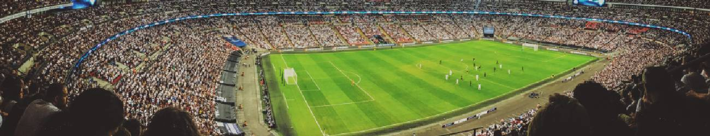

|  | |
DOMOV
HOBI 1
E POSTA |
DOMOVHOBI 1E POSTA |
NOGOMET MOJ HOBI
Nogomet imam rad že od otroštva.Vseeno je, ali jo gledam na stadionu, na televiziji, igram ali igram nogometno simulacijo na PlayStationu s prijatelji. Pomembno je le, da je to, kar počnem, povezano z nogometom. Ljubim nogomet, ker gre predvsem za kolektivno igro, v kateri ne zmaga boljša ekipa, ampak tista, ki igra bolj s srcem in kot ekipa. Danes ima nogomet status najbolj priljubljenega športa na svetu. minimalna oprema. Nogomet, ker moštveni šport združuje ljudi in izboljšuje odnose med mesti in celo državami. Moj najljubši igralec je Cristiano Ronaldo. |
|